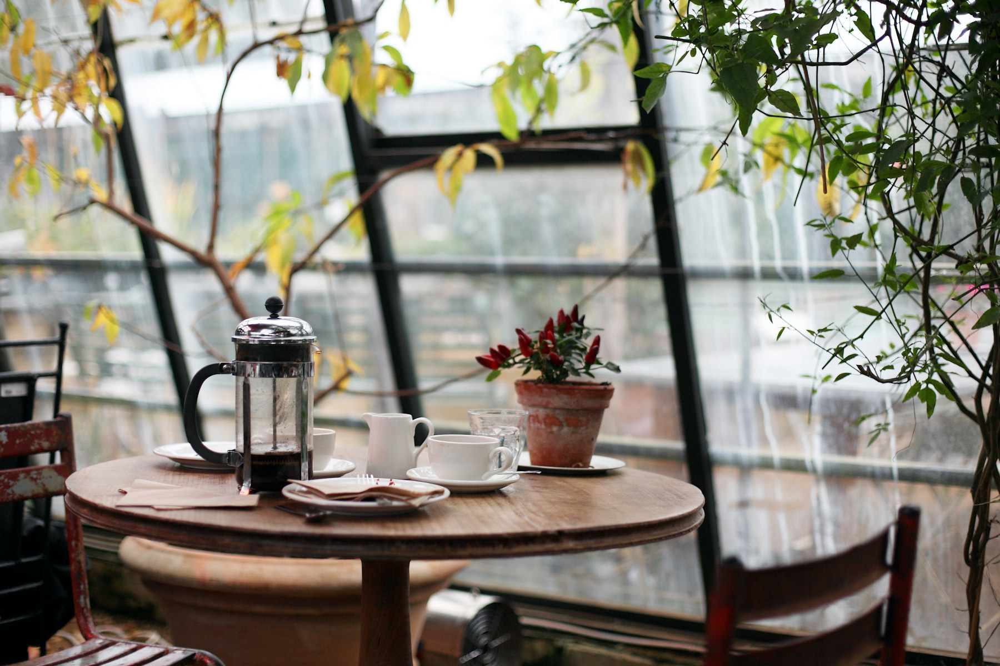
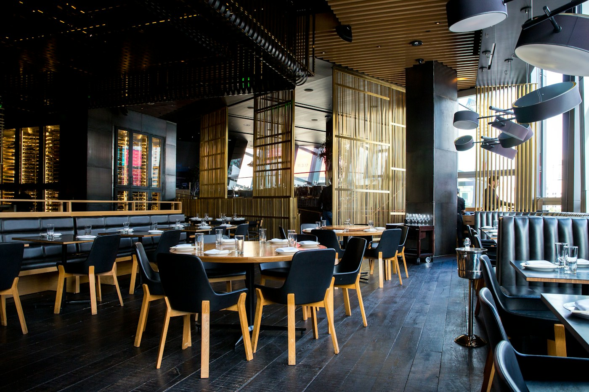

Kafe & tempat bersantap di Selong
Kopi Nikmat.
Sajian Lezat.
Tempat untuk Bersantai.
Nikmati secangkir kopi, hidangan lezat, dan waktu untuk bersantai di Anami Coffee & Eatery.
Konsep independen · Informasi bisnis di situs ini masih sementara

untuk menikmati kopi dan berbincang

Tempat untuk sejenak beristirahat
Luangkan waktu
untuk menikmati.
Anami Coffee & Eatery adalah kafe dan tempat bersantap di Selong, Jakarta Selatan. Singgah untuk menikmati kopi atau bersantai sambil menyantap hidangan.
Konsep situs independen ini menyajikan informasi sementara tentang menu, lokasi, dan kontak kafe dalam satu tempat yang mudah dijelajahi.
Kunjungi kamiTemukan lokasi kami
Tak jauh dari sini.

SELONG · JAKARTA SELATANAlamat
Buka di Google MapsJam buka
Jam operasional sementara berdasarkan direktori · Mohon konfirmasi sebelum berkunjung.
Hubungi kami
Kami siap
menyambut Anda.
Untuk menanyakan menu terbaru, jam buka, atau ketersediaan tempat, silakan konfirmasi langsung kepada kafe.